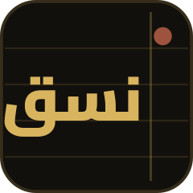

أزرار المزوّدات تملأ الرابط واسم النموذج فقط ولا تغيّر المفتاح. يُحفظ كل شيء محليًا على جهازك فقط، ولا يُرسل أي نص إلا عند ضغط «نسّق النص».
يُطبَّق الثيم فورًا ويُحفَظ تلقائيًا، فيعود معك عند فتح التطبيق من جديد.
لا توجد مسودات محفوظة بعد.
ثلاث تنويعات تختلف في مواضع كسر السطر وتوزيع الوقفات — الكلمات والمعنى كما هي. اختر أنقاها.
معاينة كيف تتكسّر الأسطر على شاشة هاتف — النص للعرض فقط، لا تحرير هنا.